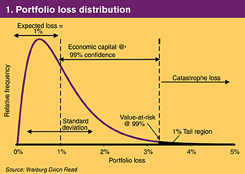
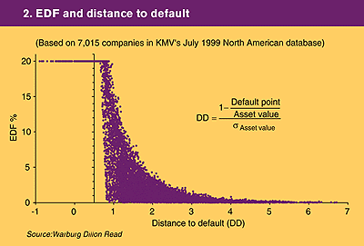
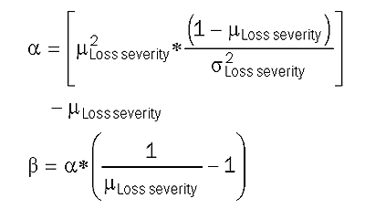
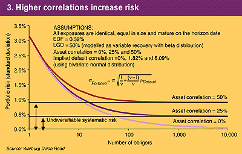
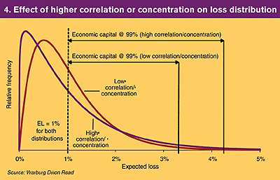
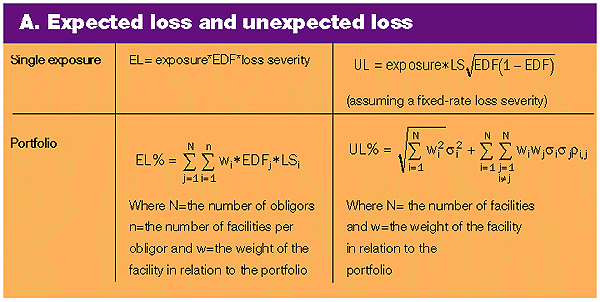

Credit models
Different strokes
Ken Phelan and Colin Alexander undertake a comparative review of credit risk models and methodologies for managing credit portfolios, and establish the variations in inputs and assumptions used in creating a credit portfolio loss distribution
Credit risk modelling has gained increasing impetus among bankers and other portfolio managers since the mid-1990s. The development of market risk management techniques such as value-at-risk (VAR) has accelerated this approach, as has the expectation among many banks that the Basle Committee on Banking Supervision will eventually accept capital allocation for credit portfolios based on these new credit VAR models. The committee’s June consultative paper concluded that credit models still have to clear key hurdles – such as data limitations – and to be validated by regulatory bodies, before they can be used to determine regulatory capital requirements (Basle 1999).
Credit risk is more difficult to model than market risk for several reasons. First, the lack of a liquid market makes it difficult – or impossible – to price credit risk for a specific obligor and tenor. Second, true default probabilities in the market cannot be observed. Users must determine these probabilities by either inferring default rates based on observed historical experience of the public credit ratings, using a model such as KMV’s Credit Monitor, or determining the default rate through a subjective credit approval process. Third, default correlations are difficult to observe or measure, making it hard to aggregate credit risk. And fourth, to calculate the capital/equity cushion, it is necessary to estimate the tail risk probabilities of asymmetric, fat-tailed loss distributions.
Recent models have been developed to overcome these obstacles. KMV’s Portfolio Manager – which uses an option-based, Merton model approach to measure default probabilities – was introduced in 1993. Empirical distributions of default probabilities are created from KMV’s proprietary database, which now covers more than 25,000 companies worldwide. JP Morgan’s CreditMetrics was introduced in 1997 to measure VAR in a credit portfolio, and shortly afterwards Credit Suisse Financial Products (CSFP) introduced its CreditRisk+ framework for analytically calculating the portfolio loss distribution. In 1998 McKinsey’s CreditPortfolioView approach and software for credit portfolio risk measurement and management came to the market. Although some of these models can also incorporate retail credit transactions, they are primarily designed for portfolios with large, publicly rated corporations.
 Portfolio Manager: This software uses return information and VAR measurements
to optimise a portfolio of credit assets and calculate Sharpe ratios of individual
assets. It enables optimal buy/sell/hold levels for trading or origination opportunities
to be determined and optimal portfolios to be calculated by rearranging the
weights of existing positions. The model also produces mark-to-model prices
for credit assets and indicates capital levels and marginal risk contributions.
Using either analytical approximation or Monte Carlo simulation, the model also
calculates the credit portfolio’s loss distribution at a given horizon date
and indicates the amount of economic capital required to support different levels
of risk.
Portfolio Manager: This software uses return information and VAR measurements
to optimise a portfolio of credit assets and calculate Sharpe ratios of individual
assets. It enables optimal buy/sell/hold levels for trading or origination opportunities
to be determined and optimal portfolios to be calculated by rearranging the
weights of existing positions. The model also produces mark-to-model prices
for credit assets and indicates capital levels and marginal risk contributions.
Using either analytical approximation or Monte Carlo simulation, the model also
calculates the credit portfolio’s loss distribution at a given horizon date
and indicates the amount of economic capital required to support different levels
of risk.
 CreditMetrics: The CreditMetrics framework uses Monte Carlo simulation
to create a portfolio loss distribution at the horizon date. Each obligor is
assigned a credit rating, and a transition matrix is used to determine the probabilities
that the obligor’s credit rating will be upgraded or downgraded, or that it
defaults. Although default represents the most extreme value deterioration,
a credit instrument can also decline in value when the obligor is downgraded.
CreditMetrics: The CreditMetrics framework uses Monte Carlo simulation
to create a portfolio loss distribution at the horizon date. Each obligor is
assigned a credit rating, and a transition matrix is used to determine the probabilities
that the obligor’s credit rating will be upgraded or downgraded, or that it
defaults. Although default represents the most extreme value deterioration,
a credit instrument can also decline in value when the obligor is downgraded.
CreditMetrics calculates the portfolio value by randomly simulating the credit quality of each obligor. The credit instruments are then repriced under each simulated outcome, and the portfolio value is simply the aggregation of these prices. The model’s portfolio framework incorporates diversification benefits which reduce the aggregate risk of stand-alone transactions. Correlated credit movements of obligors (such as several downgrades occurring together) are addressed, and any borrower, industry or geographical concentrations in the portfolio will result in increased capital requirements.
 CreditRisk+: Unlike the Merton-based approach used by Portfolio Manager
and CreditMetrics, the CreditRisk+ methodology is based on mathematical models
used in the insurance industry. Instead of absolute levels of default risk –
such as 0.25% for a triple B rated issuer – CreditRisk+ models default rates
as continuous random variables. Observed default rates for credit ratings vary
over time, and the uncertainty in these rates is captured by the default rate
volatility estimates (standard deviations). Default correlation is generally
caused by external factors such as regional economic strength or industry weakness.
CSFP argues that default correlations are difficult to observe and are unstable
over time. Instead of trying to model these correlations directly, CreditRisk+
uses the default rate volatilities to capture the effect of default correlations
and produce a long tail in the portfolio loss distribution. CreditRisk+ can
handle thousands of exposures and uses a portfolio approach which reduces risk
for diversification. Exposures can be allocated to industrial or geographical
sectors and different time horizons of exposure can be incorporated. The minimal
data requirements make the model easy to implement, and the analytical calculation
of the portfolio loss distribution is very fast.
CreditRisk+: Unlike the Merton-based approach used by Portfolio Manager
and CreditMetrics, the CreditRisk+ methodology is based on mathematical models
used in the insurance industry. Instead of absolute levels of default risk –
such as 0.25% for a triple B rated issuer – CreditRisk+ models default rates
as continuous random variables. Observed default rates for credit ratings vary
over time, and the uncertainty in these rates is captured by the default rate
volatility estimates (standard deviations). Default correlation is generally
caused by external factors such as regional economic strength or industry weakness.
CSFP argues that default correlations are difficult to observe and are unstable
over time. Instead of trying to model these correlations directly, CreditRisk+
uses the default rate volatilities to capture the effect of default correlations
and produce a long tail in the portfolio loss distribution. CreditRisk+ can
handle thousands of exposures and uses a portfolio approach which reduces risk
for diversification. Exposures can be allocated to industrial or geographical
sectors and different time horizons of exposure can be incorporated. The minimal
data requirements make the model easy to implement, and the analytical calculation
of the portfolio loss distribution is very fast.
 CreditPortfolioView: Tom Wilson, formerly of McKinsey, developed a credit
portfolio model which takes into account the current macroeconomic environment.
Rather than using historical default rate averages calculated from decades of
data, CreditPortfolioView uses default probabilities conditional on the current
state of the economy. Therefore an obligor rated triple B would have a higher
default probability in a recession than in an economic boom. The tabulated portfolio
loss distribution is conditioned by the current state of the economy for each
country and industry segment.
CreditPortfolioView: Tom Wilson, formerly of McKinsey, developed a credit
portfolio model which takes into account the current macroeconomic environment.
Rather than using historical default rate averages calculated from decades of
data, CreditPortfolioView uses default probabilities conditional on the current
state of the economy. Therefore an obligor rated triple B would have a higher
default probability in a recession than in an economic boom. The tabulated portfolio
loss distribution is conditioned by the current state of the economy for each
country and industry segment.
Loss distribution
Despite their different methodologies, all credit risk models create a distribution of possible credit portfolio values at some point in the future. Correlated changes in the credit quality of obligors result in changes in the value of exposures. These exposures are then aggregated to produce the portfolio loss distribution, which indicates the probability of achieving a certain portfolio value at the horizon date. The resulting loss distribution in Figure 1 is similar to those produced by VAR models for market risk.

Theoretically, the annual expected loss represents the amount that should be charged against the profit and loss account and added to the institution’s loss reserve account. Referring to one standard deviation, the "unexpected loss" measures risk in the portfolio. Combining the expected loss and economic capital – the extra capital, in addition to the expected loss, needed to sustain possible losses within a defined confidence level – results in a VAR number indicating the maximum likely loss in a particular portfolio over a specified holding period and within a given confidence level. The confidence level indicates the probability of portfolio losses exceeding economic capital: a triple A institution may require a very high confidence level such as 99.98%, while a triple B institution may only require 99.85%.
Before discussing how the models predict loss, the meaning of loss must be defined. There are two fundamental methods of evaluating loss in a credit portfolio. The first, the default mode paradigm, only recognises a loss in the portfolio if the obligor has defaulted on its legal obligations within the modelled time horizon. The debt of a company that is near bankruptcy will thus be valued fully at par, although it will be trading on the market well below this price.
The second method, the mark-to-market – or mark-to-model – paradigm, recognises any gains or losses in the value of a debt security caused by changes in the credit quality of the obligor over the measured time horizon. If the credit of the obligors in a portfolio deteriorates as a result of recession, for example, the portfolio value will be lower, even without any defaults. A market price for each debt security is obtained by discounting cashflows on the obligor’s credit curve.
In the mark-to-market paradigm, there are two methods to value cashflows which correspond to the way credit quality is measured. The first method uses discrete measures of credit quality such as ratings from Standard & Poor’s or Moody’s Investors Service. The second uses an obligor’s probability of default as a continuous measure of credit quality. Instead of jumping from rating to rating, the obligor’s credit quality smoothly adjusts between rating categories. The debt security at the end of the time horizon is then calculated using the default probability, remaining time to maturity and estimated recovery value in the event of default, as inputs into a valuation model.
The default mode paradigm for evaluating loss is useful when market prices are not available or maturities are short. While the two methods are identical if the debt instruments mature before the end of the time horizon, for portfolios with maturities much longer than the time horizon, the two loss paradigms can produce divergent values. A portfolio with a long average life and deteriorating credit quality will suffer a significant mark-to-market loss despite being valued at par by the default mode paradigm. Each of the credit models assumes a loss paradigm, and the different methods used show one of the key differences between the models. CreditRisk+ assumes a default mode paradigm, while CreditMetrics uses a discrete mark-to-market loss paradigm. Portfolio Manager assumes a continuous mark-to-market paradigm. Either of the loss paradigms can be used in CreditPortfolioView.
What inputs?
The inputs necessary to calculate the expected loss are: the size of exposure, likelihood of default (expected default frequency, or EDF) and the loss severity in the case of default (see below). The unexpected loss is then a function of the volatility around this expected loss. An obligor’s default/no-default process can be modelled as a binomial event, and the unexpected loss is thus equal to the square root of the probability, multiplied by one minus the probability. This stand-alone risk measure is then multiplied by the exposure amount and loss severity to determine the unexpected loss of the obligation. Unlike the expected loss, the unexpected loss in a portfolio is not additive. The portfolio’s risk is the result of each asset’s risk, its weight in the portfolio and the correlation between assets (see table A).
Credit risk exposure
The assumption of how much credit exposure the counterparty will have at
the point of default is one input. Although this concept may appear straightforward,
estimating the expected exposure can be quite complex. Exposure calculations
range from the simple funded loan with a bullet amortisation, to a complex portfolio
of derivative instruments with netting agreements.
Expected default frequency
All obligors have a probability for not paying what they owe. Exposure
size and EDF are the most important inputs into a credit risk model. Timely
and accurate default estimates are needed to estimate a portfolio’s economic
capital correctly and recommend optimal hold levels. Just as an equity call
underwriter delta hedges by purchasing more stock as the price approaches the
strike level, an institution must dynamically assign more economic capital to
an exposure as the obligor’s credit quality deteriorates. Although the default
rates can be constructed so they are consistent across the models, this may
not be the case in practice. Default rates may be estimated using different
methods in different models. There are three main approaches to estimate default
rates:
 Merton model: Default probabilities are calculated on the basis of a firm’s
capital structure and asset volatility. The model says that a firm defaults
when the value of its liabilities exceeds its assets at the debt’s maturity
date, and it uses an option framework to calculate this risk neutral default
probability. Portfolio Manager is the main user of this technique, although
CreditMetrics may also be referred to as a Merton model because the obligors’
stochastic asset values drive the credit rating process.
Merton model: Default probabilities are calculated on the basis of a firm’s
capital structure and asset volatility. The model says that a firm defaults
when the value of its liabilities exceeds its assets at the debt’s maturity
date, and it uses an option framework to calculate this risk neutral default
probability. Portfolio Manager is the main user of this technique, although
CreditMetrics may also be referred to as a Merton model because the obligors’
stochastic asset values drive the credit rating process.
Portfolio Manager measures default probabilities using an option valuation framework based on the Black-Scholes risk-neutral, option pricing framework model and on Merton’s model (Merton 1973), which described a company’s equity as equivalent to a call option on the firm’s assets. The equity holders, in effect, transfer their ownership claim to creditors, but have the right to buy back, or "call", the firm by repaying the outstanding debt (the strike price). If the firm value exceeds its obligations at maturity, the equity holders will repay the debt and hold the remaining value in the firm. If the value of the firm is worth less than its obligations at maturity, however, the owners will simply let the company default. The firm value can be created synthetically by combining the present value of the firm’s debt obligations with a long call and short put option, both with the same exercise price and expiry date.
The Merton model shows how the value of a firm’s equity declines as the firm value approaches the debt value, and how the firm defaults when the value of the call to the equity holders is considered worthless – the default point. To give a percentage likelihood of reaching that value, KMV devised a concept known as distance to default. This is calculated by scaling one minus the ratio of the default point (about half of long-term liabilities plus short-term liabilities) and the firm’s asset value by the firm’s volatility. Firms with higher volatility or financial leverage will thus have a shorter distance to default and a higher default probability. KMV then converts this distance to default into an EDF, based upon its proprietary database of empirically observed distance to default numbers for companies which actually defaulted (see figure 2). KMV claims that this distance to default relationship is stable across time and in different economic environments, such as international markets. KMV’s methodology for estimating default rates relies on an option valuation framework and information embedded in the equity markets. KMV argues that it is not possible to outperform the market consistently, so a bank should not rely on a credit officer or investment board to pick winners. Instead, the information in the equity markets can be used to estimate a company’s probability of default.

The primary advantage of Portfolio Manager is the timeliness of its default information. KMV has consistently provided early indications of credit deterioration based on price information from the equity markets. Miller (1998) found that EDFs have very strong predictive value up to 18 months prior to default and are statistically significant out to 36 months. Because Portfolio Manager relies on forward-looking information based on equity prices, the resulting default probabilities usually signal a credit deterioration or improvement before the rating agencies have had time to analyse the historical financial data.
 Actuarial models (rating matrices): this method of modelling EDF entails assigning
a rating to each credit, based on quantitative and qualitative data, in the
same way as rating agencies do. Implied in each rating is an EDF. The ratings
are placed in a matrix which determines the probability that an obligor’s rating
will change over a given time period, typically one year. Rating matrices are
principally created by observing the rating migration process of a group of
companies over one or more economic cycles. This was the approach taken by the
first release of CreditMetrics.
Actuarial models (rating matrices): this method of modelling EDF entails assigning
a rating to each credit, based on quantitative and qualitative data, in the
same way as rating agencies do. Implied in each rating is an EDF. The ratings
are placed in a matrix which determines the probability that an obligor’s rating
will change over a given time period, typically one year. Rating matrices are
principally created by observing the rating migration process of a group of
companies over one or more economic cycles. This was the approach taken by the
first release of CreditMetrics.
CreditRisk+ is based on an actuarial approach where default events are merely statistical probabilities with no underlying causality. Default rates are assigned to rating classes which are then mapped to individual exposures. CreditRisk+ also uses the volatility of these default rates as an input. Default volatilities imply a correlation structure and produce the tail risk in the portfolio. But neither the theory nor the documentation provide much insight into the appropriate default rate volatilities to use in the model, which should be stressed when determining the model’s sensitivity to these values.
 Econometric: CreditPortfolioView advocates that default rates are conditional
on the current state of the economy as well as differences caused by industry
or geography. Default rates are related to GDP growth, unemployment rates and
interest rates. Rather than using a rating classification’s average default
rate, observed over many economic cycles, the current default rate estimate
and transition probabilities depend on the current state of the economy. Given
that default rates vary over the economic cycle and that the volatilities of
default rates are more extreme in some industries, Wilson (1997) advocates the
use of an empirical relationship between the macro-economic factors and rating
transition matrices. One practical difficulty with this method is a lack of
data to calibrate the models. As the data is further refined to make it more
granular (by increasing the number of rating classes, industries or geographical
regions), the number of data points is reduced for each category. As a result,
the number of observed defaults becomes increasingly sparse and the standard
error of the estimates increases.
Econometric: CreditPortfolioView advocates that default rates are conditional
on the current state of the economy as well as differences caused by industry
or geography. Default rates are related to GDP growth, unemployment rates and
interest rates. Rather than using a rating classification’s average default
rate, observed over many economic cycles, the current default rate estimate
and transition probabilities depend on the current state of the economy. Given
that default rates vary over the economic cycle and that the volatilities of
default rates are more extreme in some industries, Wilson (1997) advocates the
use of an empirical relationship between the macro-economic factors and rating
transition matrices. One practical difficulty with this method is a lack of
data to calibrate the models. As the data is further refined to make it more
granular (by increasing the number of rating classes, industries or geographical
regions), the number of data points is reduced for each category. As a result,
the number of observed defaults becomes increasingly sparse and the standard
error of the estimates increases.
Loss severity
The loss severity in the event of default is the third key input into any
credit model. When an issuer defaults on a debt obligation, the holder of the
paper is likely to suffer financial loss. The amount of the loss is uncertain,
but the seniority of the debt obligation generally has a strong influence on
the recovery value. There are two key ways of modelling loss severity. The first
is to treat all recoveries as fixed values that are known with certainty. This
simplification is reasonable because the uncertainty of the recovery value does
not contribute significantly to the risk of the facility when compared with
default rate volatility. Expected loss (EL) is equal to the product of the exposure
amount, the expected default frequency, and the loss severity in the event of
default (EL = exposure * EDF * LS). In general, the default rate estimate dominates
the loss severity estimate when estimating the expected loss of an exposure.
CreditRisk+ uses a fixed loss methodology: all exposures are input into the
model net of any losses in the event of default. The second method models the
recovery value as a random variable of between 0% and 100%. A beta distribution
is often used to model the uncertain recovery value:

This distribution is useful because it can be bound between two points and can assume a wide range of shapes. Both CreditMetrics and Portfolio Manager use a beta distribution to model the recovery value in the event of default.
Why diversify?
By their nature, default risks have very low correlations and are managed by diversification. Default correlation between two counterparties is related to the probability of both of them defaulting within a specified time horizon. Whereas equity correlations tend to be quite high (40% for instance), which increases risk, the default correlations tend to be quite low (between 0.5% and 2.5% for most bank loans). Correlations, and the methodology to calculate them in a given credit model, can have a major effect on the loss distribution of a portfolio and is a key difference between the credit models (see figure 3).

Because of low default correlations, the distribution of defaults will never become symmetric and will inherit much of the skewness of its constituent assets. This asymmetric loss distribution will result in the actual loss on a credit portfolio in any given year exceeding the average loss only 20% to 30% of the time. But when this occurs, these losses can be many multiples of the expected loss, and thus require economic capital to absorb them. For two portfolios with the same expected loss, figure 4 illustrates how different levels of correlation in a portfolio require different levels of economic capital.

Because of the difficulty in modelling the value of the credit assets directly, many of the models have resorted to a theoretical approach. For example, Portfolio Manager uses the observed equity prices and an option based framework to calculate a firm’s asset value (essentially equal to the value of the debt and equity). The volatility of these asset values is also estimated. In contrast to equity volatilities, asset volatilities tend to be relatively stable over time. Based on asset values, volatilities and the firms’ capital structures, Portfolio Manager uses a sophisticated factor model to measure the default correlation between obligors. CreditMetrics, on the other hand, uses equity index returns to proxy asset returns. It calculates the correlations between country and industry pairs then maps each obligor to these indexes.
The CreditRisk+ methodology for quantifying the systematic risk in a portfolio allocates obligors to a number of sectors representing independent systematic factors. Each sector can be user-defined, and thus the challenge is to create statistically independent sectors and measure an obligor’s allocation to each of them. More sectors will reduce risk, but at a decreasing rate.

Ken Phelan is executive director and Colin Alexander is a director at Warburg Dillon Read in Stamford, Connecticut, and London respectively
References
Basle Committee on Banking
Supervision, 1999
Credit risk modelling:
current practices and applications
Merton R, 1973
Theory of rational
option pricing, Bell Journal of Economics and
Management Science 4, pages 141–183
Miller R, 1998
Refining ratings,
Risk August, pages 97–99
Wilson T, 1997
Portfolio credit risk,
Risk September, pages 111–117 and Risk
October, pages 56–61